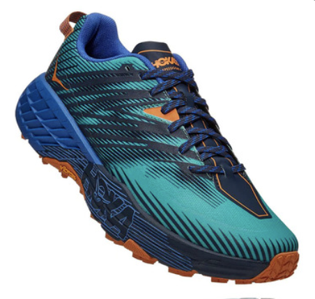
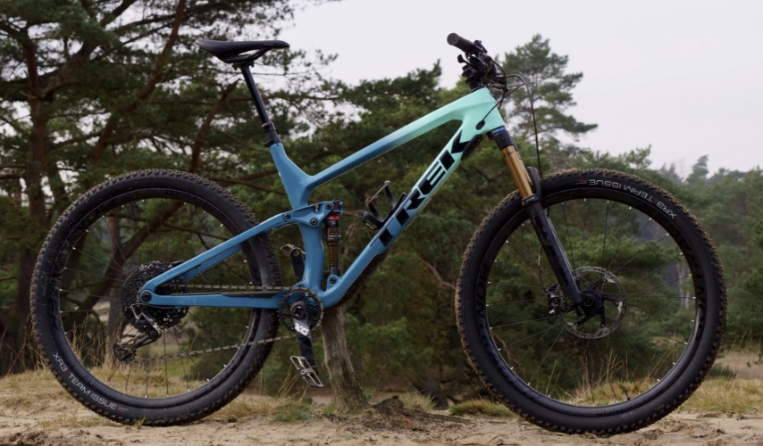
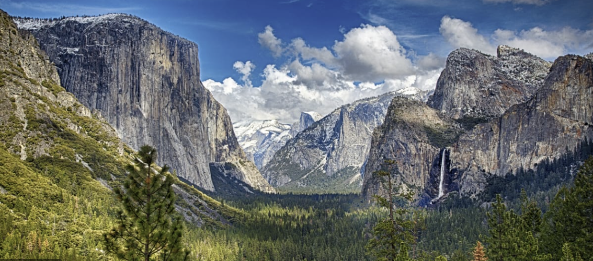

What shoes do you recomend for hiking?
I personally love trail running shoes! Currently I use Hoka Speedgoat 4s! And they are amazing! Super cushy, they make me feel like i’m walking on a cloud! They are a good in-between of a running shoe and a hiking boot.

What type of bike do you like better, hardtail or full suspension?
I ride a full suspension bike! I can lock out my shocks so its easier on the climbs then unlock them for a nice smooth ride down! But they are more expensive. Hard tail bikes do allow you to climb easier but are not as cushy.

Why should I want to be outdoors?
The outdoors is where you can feel one with gods creations. You are able to experience the beauty of this planet we live on. Your able to make memories with the people you love!